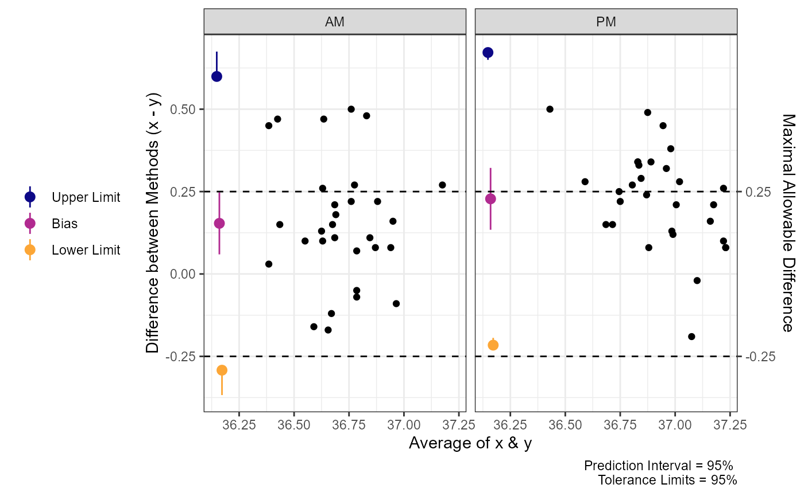
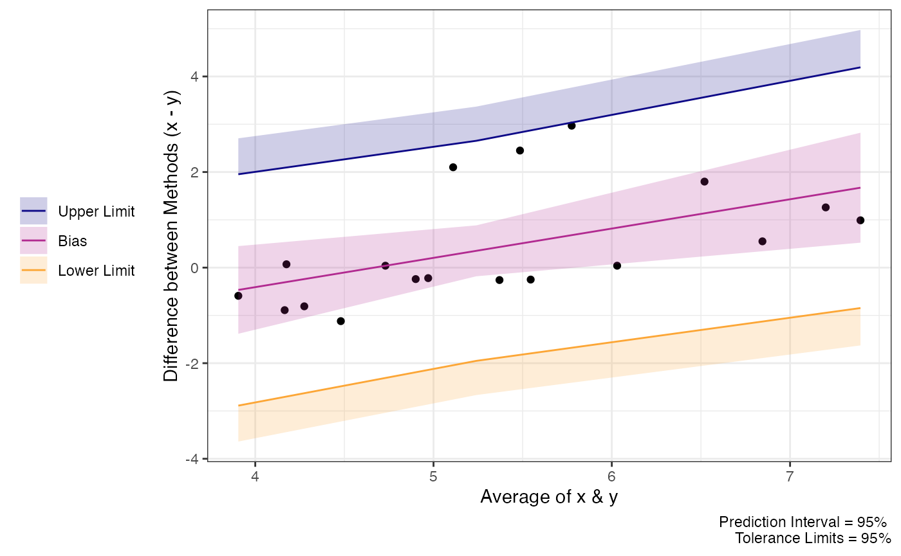
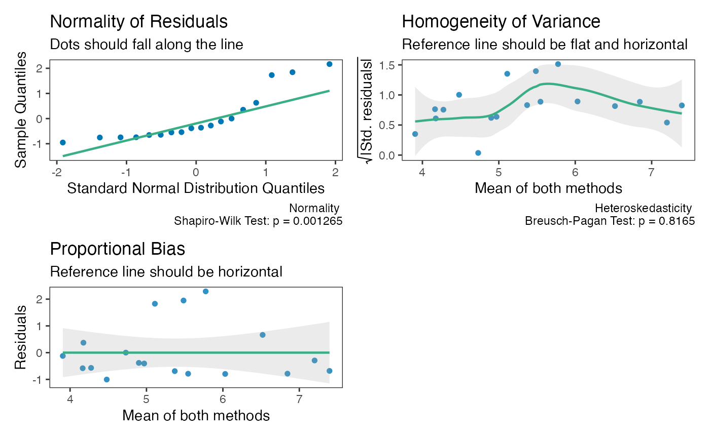
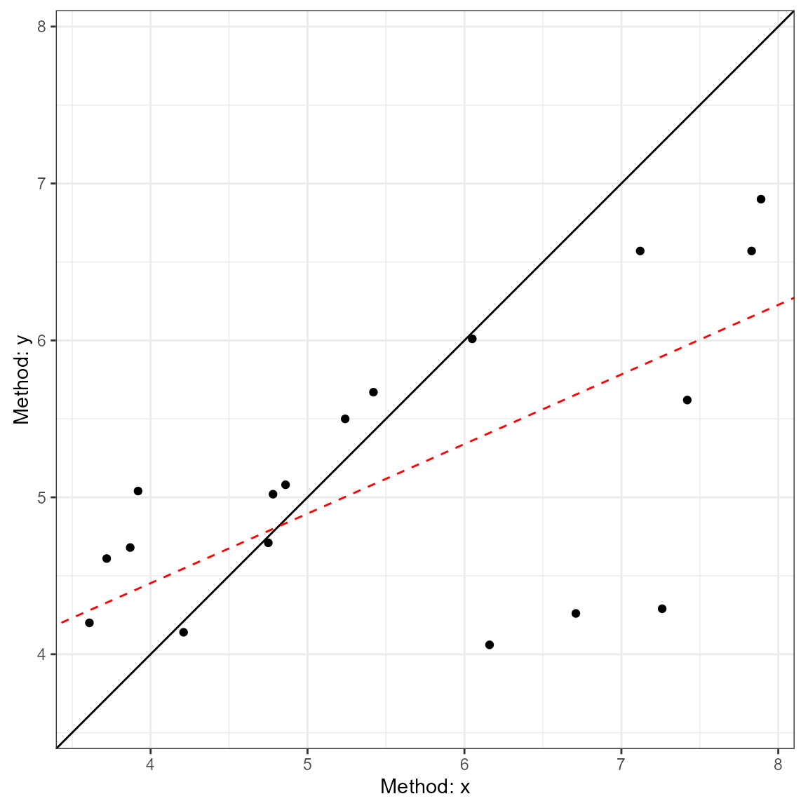
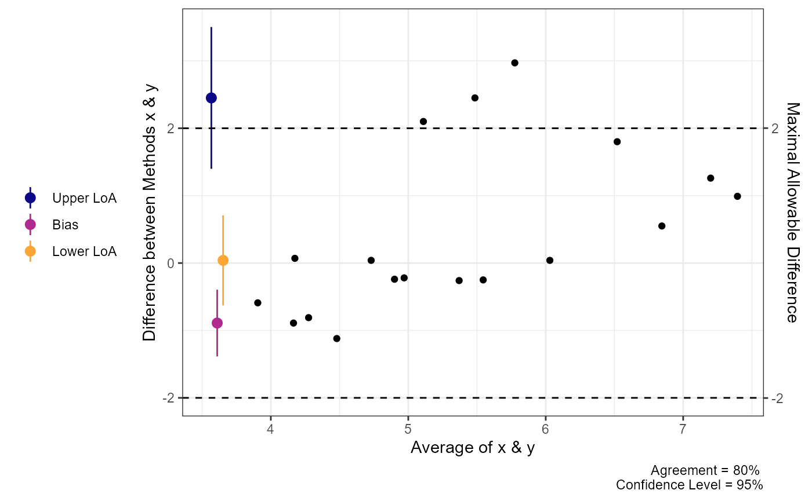
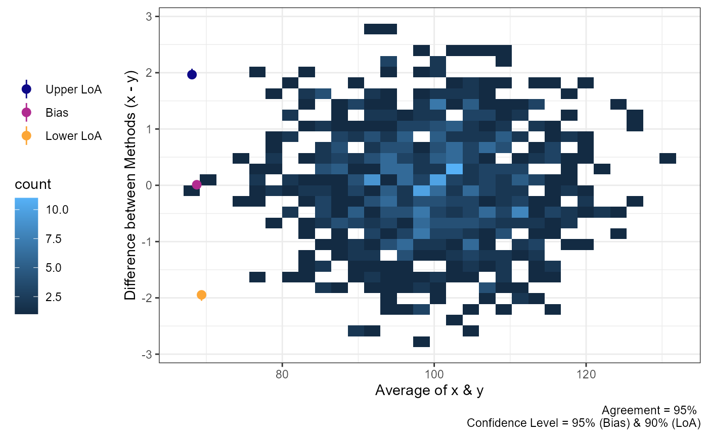
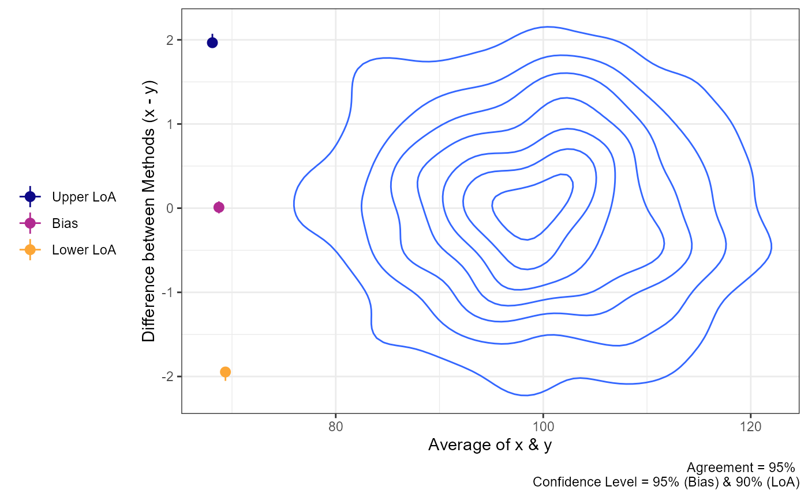
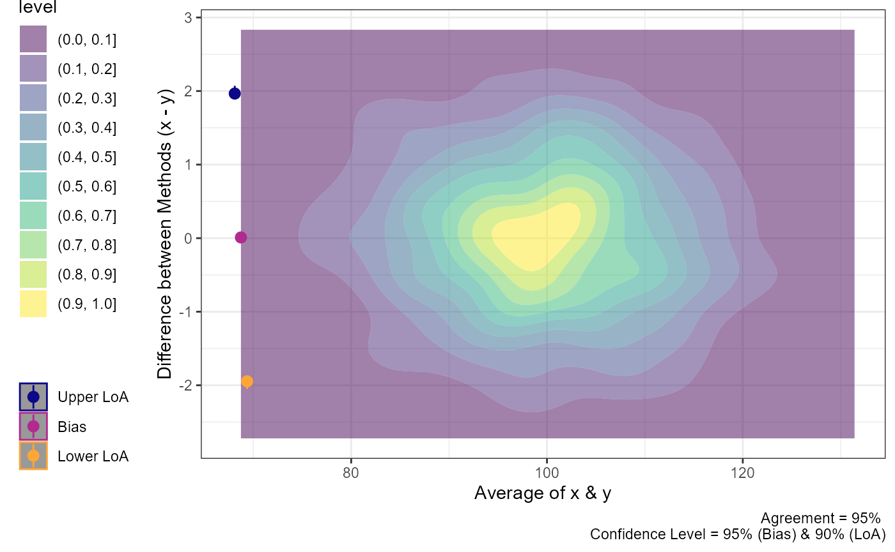
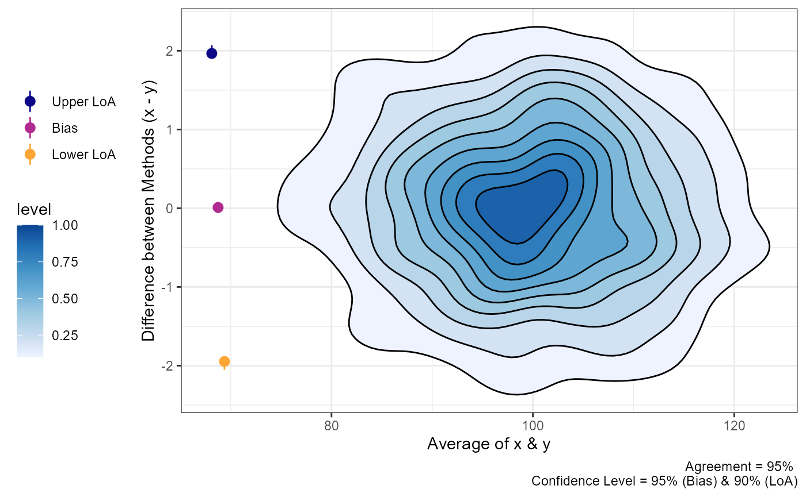

Agreement & Tolerance Limits
Aaron R. Caldwell
Last Updated: 2026-09-24
Source:vignettes/agreement_analysis.Rmd
agreement_analysis.RmdIn this vignette I will briefly demonstrate how
SimplyAgree calculates agreement and tolerance limits. This
vignette assumes the reader has some familiarity with “limits of
agreement” (Bland-Altman limits) and is familiar with the concept of
prediction intervals. Please read the references listed in this vignette
before going further if you are not familiar with both
concepts.
library(SimplyAgree)
data(temps)Agree or Tolerate?
Francq et al. (2020) pose this question in a
paper published in Statistics in Medicine. Traditionally, those
working in medicine or physiology have defaulted to calculating some
form of “limits of agreement” that Bland and
Altman (1986) recommended in their
seminal paper. The recommendation by Bland and
Altman (1986) was only an
approximation, and that has undergone many modifications (e.g., Bland and Altman
1999; Zou 2011) to improve the
accuracy of the agreement interval and their associated confidence
intervals. Meanwhile, the field of industrial statistics has focused on
calculating tolerance limits. There are R packages, such as the
tolerance R package available on CRAN, that are entirely
dedicated to calculating tolerance limits. It is important to note that
tolerance is not limited to the normal distribution and can be applied
to other distributions (please see the tolerance package by Young (2010) for more details).
However, in the agreement studies typically seen in medicine, tolerance
limits may be a more accurate way of determining whether two
measurements are adequately close to one another.
To quote Francq et al. (2020):
In terms of terminology, tolerance means, in this context, that some difference between the methods is tolerated (the measurements are still comparable in practice). Furthermore, the tolerance interval is exact and therefore more appropriate than the agreement interval.
In this package, tolerance limits refer to the “tolerance” associated
with the prediction interval for the difference between 2 measurements.
The calculative approach (detailed much further below) involves
calculating the prediction interval for the difference between two
methods (i.e., an estimate of an interval in which a future observation
will fall, with a certain probability, given what has already been
observed) and then calculating the confidence in the interval (i.e.,
tolerance). Therefore, if we want a 95% prediction interval with 95%
tolerance limits, the prediction interval is expected to contain 95% of
future observations, and the tolerance limits are an interval that, with
95% confidence, contains at least 95% of all differences (the default,
bound_type = "joint"; see Joint versus
Intersection-Union (IU) Bounds for the alternative and when to use
which).
Personally, I find the use of prediction intervals and tolerance
limits more attractive for 2 reasons: 1) the coverage of the prediction
intervals and their tolerance limits is often better than confidence
intervals for agreement limits, and 2) the interpretation of the
tolerance limits is much clearer. For a greater discussion of this
topic, please see the manuscript by Francq et al.
(2020) and check out their
R package BivRegBLS.
Joint versus Intersection-Union (IU) Bounds
Both agreement_limit() and
tolerance_limit() report confidence bounds around the
limits, and both have a bound_type argument with the
options "joint" and "iu". The two options
answer different questions, so it is worth being clear about which one a
reported interval supports.
Two questions
Suppose the two methods would be considered interchangeable if the differences stay within a maximal allowable difference, \(\pm\Delta\), that was set in advance on clinical or practical grounds. Two different questions can then be asked of the data:
- “Where are the limits?” We want an interval that we can report as a statement about the limits (or about the bulk of the differences), with a stated confidence.
- “Can we conclude agreement within \(\pm\Delta\)?” We want a hypothesis test, with a controlled error rate, of whether the differences stay within \(\pm\Delta\).
A joint bound answers the first question: it is an interval, and the confidence applies to the whole interval. An intersection-union (IU) bound answers the second question: it gives the correctly sized test, but the pair of bounds is not an interval with the stated confidence.
Limits of agreement (agreement_limit())
The limits of agreement estimate two parameters, the lower and upper percentiles of the differences, \(\theta_L = \mu - z\sigma\) and \(\theta_U = \mu + z\sigma\) (the 2.5th and 97.5th percentiles for 95% limits of agreement). Each limit has its own sampling uncertainty, and the “LoA CI” reports the outer confidence bound of each one: a lower bound for \(\theta_L\) and an upper bound for \(\theta_U\).
-
"joint": each bound is the outer end of a two-sided \(1 - \alpha\) confidence interval, so each side is a one-sided \(1 - \alpha/2\) bound. By the Bonferroni inequality, both limits of agreement lie within the reported interval with at least \(1 - \alpha\) confidence. This is the Bland-Altman convention, and the interval can be reported as “with 95% confidence, both limits of agreement lie within [L, U]”. Used as a test against \(\pm\Delta\), the error rate is at most \(\alpha/2\) (conservative). -
"iu": each bound is a one-sided \(1 - \alpha\) bound (the outer end of a two-sided \(1 - 2\alpha\) interval, e.g., a 90% interval for \(\alpha = 0.05\)). Agreement within \(\pm\Delta\) means that both \(\theta_L > -\Delta\) and \(\theta_U < \Delta\), so the null hypothesis of no agreement is the union \(H_0: \theta_L \le -\Delta\) or \(\theta_U \ge \Delta\). By the intersection-union principle (Berger and Hsu 1996), rejecting only when each of the two one-sided tests rejects at level \(\alpha\) gives an overall test with error rate at most \(\alpha\), with no multiplicity adjustment. This is the same logic as the two one-sided tests (TOST) procedure for equivalence. The price is that the two bounds hold together only about \(1 - 2\alpha\) of the time (about 90% for \(\alpha = 0.05\)), so they should not be reported as a 95% interval for the limits of agreement.
Because the IU bounds use a less extreme quantile on each side, the IU bounds always lie inside the joint bounds for the limits of agreement. A result near \(\pm\Delta\) can therefore pass the IU test but not the joint criterion.
Tolerance limits (tolerance_limit())
For tolerance limits, the two options target different quantities:
-
"joint": a “beta-content”, “gamma-confidence” tolerance interval: with confidence \(\gamma\) (tol_level), at least a proportion \(\beta\) (pred_level) of all differences lie within \([L, U]\). This is a single statement about the coverage of the interval, and it is how tolerance intervals are usually defined (Howe 1969; Francq et al. 2020). If \([L, U]\) lies within \(\pm\Delta\), one can conclude at level \(1 - \gamma\) that at least a proportion \(\beta\) of the differences lie within \(\pm\Delta\). The two tails do not need to be split equally: an interval with 1% of the differences below it and 4% above it still has 95% content. -
"iu": a one-sided \(\gamma\) confidence bound on each of the \((1 \mp \beta)/2\) percentiles of the differences, i.e., on the limits of agreement. These target the same quantities as theagreement_limit()bounds, and the test against \(\pm\Delta\) has the same intersection-union interpretation.
Unlike the limits of agreement, the two kinds of tolerance limits do not nest, because they test different hypotheses: the joint limits bound the total proportion of differences outside \([L, U]\), while the IU bounds control each tail separately. For example, with 30 independent differences and \(\beta = \gamma = 0.95\), the multipliers of the standard deviation are:
| Interval | Multiplier |
|---|---|
| Plug-in limits of agreement (no uncertainty), \(z_{0.975}\) | 1.960 |
| Joint (\(\beta\)-content, Howe) | 2.550 |
| IU (one-sided 95% bound on each percentile) | 2.608 |
| Equal-tailed joint (Bonferroni, 97.5% per side) | 2.757 |
so the IU tolerance bounds are slightly wider than the joint tolerance limits here. A skewed distribution of differences can also pass one criterion and fail the other. The choice between them is therefore about the hypothesis of interest (coverage, or each tail), not only about how conservative the result is.
Why the defaults differ
The defaults follow what each function is for:
-
agreement_limit()defaults to"iu". The confidence bounds on the limits of agreement are used to decide whether the limits fall within \(\pm\Delta\). That is an intersection-union question, and the IU bounds give a test with the stated error rate \(\alpha\); the joint bounds would be conservative (error rate \(\alpha/2\)). This is also whatagreement_limit()has always computed, so the default does not change earlier results. Usebound_type = "joint"when the interval itself is to be reported. -
tolerance_limit()defaults to"joint". A tolerance interval is itself a reportable statement (“with 95% confidence, at least 95% of the differences lie within [L, U]”), and the \(\beta\)-content interval is what the tolerance interval literature, and the approximation of Francq et al. (2020), refer to. The IU version duplicates the confidence bounds ofagreement_limit(), so it is offered as an option rather than the default.
What to report
- State which kind of bound is reported, and at what level. The printed output of both functions does this.
- To report an interval: use the joint bounds
(
agreement_limit(bound_type = "joint")or the default tolerance limits). - To test agreement within \(\pm\Delta\): compare either the IU bounds
of the limits of agreement (the default of
agreement_limit()) or the joint tolerance limits against \(\pm\Delta\), depending on whether the hypothesis concerns each tail or the overall proportion of differences, and state which was used. - Remember, IU bounds limits of agreement are one-tailed confidence intervals.
Tolerance
In SimplyAgree we utilize a generalized least square
(GLS) model to estimate the prediction interval and tolerance limits.
The function uses the gls function from the
nlme R package to build the model. This allows a
very flexible approach for estimating prediction intervals and
tolerance limits.
We can use the tolerance_limits function demonstrate the
basic calculations. In this example (below), we use the
temps data set to measure the differences between
esophageal and rectal temperatures between different times of day
(tod) and controlling for the intra-subject
correlation.
tolerance_limit(
data = temps,
x = "trec_pre", # First measure
y = "teso_pre", # Second measure
id = "id", # Subject ID
condition = "tod", # Identify condition that may affect differences
cor_type = "sym" # Set correlation structure as Compound Symmetry
)
#> Agreement between Measures (Difference: x-y)
#> 95% CI for Bias; 95% Prediction Interval
#> Tolerance Limits: at least 95% of differences with 95% confidence
#> Model: GLS, compound symmetry within id; residual SD by condition
#>
#> Condition Bias Bias CI Prediction Interval Tolerance Limits
#> AM 0.1537 [0.0595, 0.2478] [-0.2919, 0.5993] [-0.3674, 0.6748]
#> PM 0.2280 [0.1342, 0.3218] [-0.216, 0.672] [-0.1938, 0.6498]Calculative Approach
This section describes how tolerance_limit() computes
each interval. The model is fit with the nlme package
(Pinheiro & Bates)1, which, unlike the models used for the
limits of agreement below, accommodates correlated errors and unequal
variances.
Notation
-
\(d\) is the difference between the
two measurements (
x - y), and \(b\) is its estimated mean (the bias, the estimated marginal mean fromemmeans) for a given row of the output (a condition and/or a value of the average whenprop_bias = TRUE). -
\(\beta\) =
pred_levelis the content, the proportion of differences the limits should cover, and \(\alpha_1 = 1 - \beta\). -
\(\gamma\) =
tol_levelis the confidence of the tolerance limits, and \(\alpha_2 = 1 - \gamma\). - \(z = z_{1 - \alpha_1/2}\), the standard normal quantile (1.96 for \(\beta = 0.95\)).
- \(\chi^2_{p, \nu}\) is the \(p\) quantile of a chi-square distribution with \(\nu\) degrees of freedom, and \(t_{p, \nu}\) the \(p\) quantile of a \(t\) distribution.
- With repeated measures, every interval refers to a single new difference from a new subject: its variance includes the between-subject and within-subject variance.
Arguments Influencing the Model
The only required arguments are x, y, and
data, which give the data frame and the columns that
contain the two measurements.
-
ididentifies the subjects (or other clusters) within which differences are correlated. Withmodel = "lme", it can name two nested levels, outer level first (e.g.,id = c("golfer", "club")). -
timegives the order of the measurements within a subject, for the autoregressive correlation structures. -
conditionidentifies a factor that may change the mean and the variance of the differences; it adds a separate mean and a separate residual variance for each condition. -
prop_bias = TRUEadds the average of the two measurements as a covariate, and the limits are reported at its minimum, median, and maximum. -
modelandcor_typeset the model for the correlation between differences from the same subject (below). -
weightsandcorrelationlet you specify annlmevariance function or correlation structure directly.
The model
With model = "gls" (default), the differences follow a
marginal generalized least squares model (nlme::gls()):
\[ d_{ij} = \mathbf{x}_{ij}^\top \boldsymbol{\beta} + e_{ij}, \qquad \text{Var}(e_{ij}) = \sigma^2 g_{ij}^2, \qquad \text{Cor}(e_{ij}, e_{ij'}) = R_{i, jj'} \]
where \(g_{ij}\) is the variance
function (1 without one) and \(R_i\) is
the correlation matrix for subject \(i\): compound symmetry
(cor_type = "sym", a common correlation \(\rho\)), AR(1) or continuous AR(1)
("ar1", "car1"), or none. The variance of a
single difference for a given row of the output is \(S^2 = \hat\sigma^2 g^2\).
With model = "lme", the differences follow a linear
mixed model (nlme::lme()) with a random intercept for each
subject and, optionally, for each setting (inner level) within
subject:
\[ d_{ijk} = \mathbf{x}_{ijk}^\top \boldsymbol{\beta} + u_i + v_{ij} + e_{ijk}, \qquad u_i \sim N(0, \sigma_1^2), \quad v_{ij} \sim N(0, \sigma_2^2), \quad \text{Var}(e_{ijk}) = \sigma^2 g_{ijk}^2 \]
where \(v_{ij}\) is present only
with two id columns, the variance function applies to the
residuals only, and cor_type = "ar1" or "car1"
adds serial correlation of the residuals within the innermost level. The
variance of a single difference for a given row is
\[ S^2 = \hat\sigma_1^2 + \hat\sigma_2^2 + \hat\sigma^2 g^2 . \]
The output reports the components as SD.between (\(\hat\sigma_1\)), SD.nested
(\(\hat\sigma_2\)), and
SD.within (\(\hat\sigma
g\)). For gls with compound symmetry,
SD.between \(= \sqrt{\hat\rho}\,
S\) and SD.within \(=
\sqrt{1 - \hat\rho}\, S\).
The bias and its standard error
The bias \(b\) for each row and its
standard error (SEM) are the estimated marginal mean and its standard
error from emmeans. The confidence interval for the bias is
\(b \pm t_{1 - (1 - c)/2,\, df_b} \cdot
SEM\), where \(c\) is
conf_level. The degrees of freedom \(df_b\) are:
-
model = "gls": the approximation of Satterthwaite (1946) (see Kuznetsova et al. (2017) for its implementation in R). -
model = "lme": the “containment” degrees of freedom, which are the number of subjects minus 1 for the models fit here. The Satterthwaite approximation forlmemodels inemmeanscan fail (for a model with only an intercept) or not terminate (with a variance function), so it is not used.
Prediction interval
The standard error of prediction (SEP) combines the uncertainty in the bias with the variance of a single difference:
\[ SEP = \sqrt{SEM^2 + S^2} \]
and the prediction interval is
\[ PI = b \pm t_{1-\alpha_1/2,\, df_b} \cdot SEP . \]
This is a “beta-expectation” tolerance interval: on average over repeated studies, it contains a proportion \(\beta\) of the differences. It is not a confidence statement.
Upper confidence bound for the SD
Both kinds of tolerance limits need a one-sided upper confidence bound \(S_U\), at level \(\gamma\), for the SD of a single difference. The difficulty with repeated measures is that \(S^2\) is a sum of variance components that are estimated with very different amounts of information: the between-subject variance with only (subjects \(- 1\)) degrees of freedom, and the within-subject variance with many more. A single chi-square distribution with a single “effective” degrees of freedom misses the skewness of the between-subject part and gives limits that are too narrow (coverage of about 91% for a 95% target in our simulations). Instead, \(S^2\) is split into pieces, each with its own degrees of freedom, and the pieces are combined with the MOVER method (Zou 2011; Donner and Zou 2012), as for the nested limits of agreement further below.
Independent data (gls without
id, or with cor_type = "none"): with \(\nu\) the residual degrees of freedom
(\(N - p\) without a variance
function),
\[ S_U = S \sqrt{\frac{\nu}{\chi^2_{\alpha_2, \nu}}} . \]
Variance components (gls with compound
symmetry, or lme): write \(S^2 =
\sum_j a_j\), where piece \(j\)
is estimated with \(\nu_j\) degrees of
freedom. Then
\[ S_U^2 = S^2 + \sqrt{\sum_j \left[ a_j \left( \frac{\nu_j}{\chi^2_{\alpha_2, \nu_j}} - 1 \right) \right]^2 } . \]
Pieces with zero degrees of freedom are dropped. The pieces are the balanced nested analysis of variance decomposition of \(S^2\) into the variance of a subject mean and the remaining within-subject variation, generalized to unbalanced data and to residual correlation:
| Model | Piece | \(a_j\) | \(\nu_j\) |
|---|---|---|---|
gls, compound symmetry |
subject mean | \(\left(\hat\rho + \dfrac{1 - \hat\rho}{m_h}\right) S^2\) | \(n - 1\) |
| within subject | \(S^2 - a_1\) | \(N - n\) | |
lme |
subject mean | \(\hat\sigma_1^2 + \tau\, \hat\sigma_2^2 + \kappa_{s}\, \hat\sigma_e^2\) | \(n - 1\) |
| setting within subject | \((1 - \tau)\, \hat\sigma_2^2 + (\kappa_{c} - \kappa_{s})\, \hat\sigma_e^2\) | \(n_c - n\) | |
| within setting | \((1 - \kappa_{c})\, \hat\sigma_e^2\) | \(N - n_c\) |
where:
- \(n\) is the number of subjects, \(n_c\) the number of settings (the inner level; \(n_c = n\) without nesting, so the middle piece is empty), and \(N\) the number of measurements.
- \(\hat\sigma_e^2 = \hat\sigma^2 g^2\) is the residual variance for the row, and \(\hat\rho\) is the compound symmetry correlation (truncated at 0).
- \(m_h = n / \sum_i m_i^{-1}\) is the harmonic mean number of measurements per subject (\(m_i\) for subject \(i\)).
- \(\kappa_s = \frac{1}{n} \sum_i \mathbf{1}^\top R_i \mathbf{1} / m_i^2\) is the residual variance of a subject mean relative to that of one measurement, averaged over subjects, and \(\kappa_c\) is the same for setting means. Without residual correlation, \(\kappa_s\) is the mean of \(1/m_i\) (so \(\kappa_s = 1/m_h\)) and \(\kappa_c\) the mean of \(1/m_c\); with AR(1) residuals, \(\mathbf{1}^\top R_i \mathbf{1}\) adds the correlations between measurements.
- \(\tau = \frac{1}{n} \sum_i \sum_c m_{ic}^2 / m_i^2\) is the share of the setting variance in the variance of a subject mean (\(1/s\) with \(s\) settings of equal size).
For balanced data without residual correlation, these are exactly the pieces of the classical decomposition \(S^2 = MS_A / (sk) + MS_B (1/k - 1/(sk)) + MS_W (1 - 1/k)\) for \(n\) subjects, \(s\) settings per subject, and \(k\) measurements per setting.
When condition is supplied, each condition has its own
residual variance, and each condition’s variance components are
estimated from the measurements in that condition. The counts (\(n\), \(n_c\), \(N\), \(m_i\), \(m_h\)) and \(\kappa\), \(\tau\) are then computed from the rows of
that condition only. (Using the counts of the whole data set gave limits
that were too narrow: about 93% coverage for a 95% target.)
Other correlation structures (gls with
AR(1), continuous AR(1), or a user-specified structure): \(S_U = S \sqrt{\nu / \chi^2_{\alpha_2,
\nu}}\) with an effective degrees of freedom
\[ \nu = \frac{2 S^4}{\widehat{\text{Var}}(S^2)}, \]
where \(\widehat{\text{Var}}(S^2)\)
comes from the delta method applied to the approximate covariance matrix
of the variance parameters (\(\log
\hat\sigma\) and the variance function parameters) that
nlme computes (apVar). If that matrix is not
available, \(df_b\) is used instead,
with a warning.
The output reports \(S_U\) as
SD.upper and the degrees of freedom of \(S^2\) as SD.df (for the
variance components, the Satterthwaite value \(S^4 / \sum_j a_j^2 / \nu_j\), reported for
information only).
Tolerance limits: bound_type = "joint"
See Joint versus Intersection-Union (IU) Bounds for when to use the joint or the IU limits.
The joint tolerance limits are a “beta-content”, “gamma-confidence” tolerance interval: with confidence \(\gamma\), at least a proportion \(\beta\) of all differences lie within the limits. They use the approximation of Howe (1969), as described by Francq et al. (2020):
\[ TI = b \pm z \cdot SEP \cdot \frac{S_U}{S} . \]
For independent data with only an intercept, \(SEP = S \sqrt{1 + 1/n}\) and \(S_U / S = \sqrt{(n-1)/\chi^2_{\alpha_2, n-1}}\), and this is exactly Howe’s tolerance factor. If the limits lie within a maximal allowable difference \(\pm\Delta\), one can conclude, at level \(\alpha_2\), that at least a proportion \(\beta\) of the differences lie within \(\pm\Delta\). The tails do not need to be split equally.
Tolerance limits: bound_type = "iu"
The “iu” limits are one-sided \(\gamma\) confidence bounds on each of the two limits of agreement, \(\theta_L = \mu - z\sigma\) and \(\theta_U = \mu + z\sigma\) (the \((1 \mp \beta)/2\) percentiles of the differences). If both bounds lie within \(\pm\Delta\), one can reject, at level \(\alpha_2\), that either limit of agreement lies outside \(\pm\Delta\) (an intersection-union test). The two bounds hold together only about \(1 - 2\alpha_2\) of the time, so they are not a joint \(\gamma\) interval.
Independent data (gls without a
correlation structure): the bounds are exact, from the noncentral \(t\) distribution,
\[ b \mp t'_{\gamma,\, \nu}\!\left(\frac{zS}{SEM}\right) SEM , \]
where \(t'_{\gamma, \nu}(\lambda)\) is the \(\gamma\) quantile of a noncentral \(t\) distribution with \(\nu\) degrees of freedom and noncentrality \(\lambda\). (When \(\lambda > 37\), where the noncentral \(t\) quantile is numerically unreliable, the MOVER bound below is used.)
Otherwise, the MOVER bound (Zou 2011) combines the one-sided bounds for the bias and for \(S\):
\[ L = (b - zS) - \sqrt{\left(t_{\gamma,\, df_b}\, SEM\right)^2 + z^2 \left(S_U - S\right)^2}, \qquad U = (b + zS) + \sqrt{\left(t_{\gamma,\, df_b}\, SEM\right)^2 + z^2 \left(S_U - S\right)^2} . \]
Bootstrap calibration: tol_method = "boot_cal"
(experimental)
The bootstrap calibrates the nominal confidence level of the analytic limits (Loh 1987; Beran 1987):
-
Simulate \(B\)
(
replicates) new data sets from the fitted model, using the point estimates: \(\mathbf{d}^* = \mathbf{X}\hat{\boldsymbol\beta} + \mathbf{e}^*\), where \(\mathbf{e}^*\) has the fitted marginal covariance. For subject \(i\) this is \(D_i R_i D_i\) forglsand \(\hat\sigma_1^2 J + \hat\sigma_2^2 B_i + D_i R_i D_i\) forlme, where \(D_i\) holds the residual SDs, \(J\) is a matrix of ones, and \(B_i\) has ones for pairs of measurements in the same setting. - Refit the model to each data set, and compute the replicate bias \(b^*\), SD \(S^*\), SEM\(^*\), and variance components (or effective degrees of freedom). Replicates whose model fails to converge are dropped, with a warning if more than 5% fail.
-
Calibrate. For a nominal level \(\lambda\), compute the analytic limits
\(L^*(\lambda)\) and \(U^*(\lambda)\) in each replicate (reusing
\(df_b\) from the original fit). The
fitted model plays the role of the truth, with differences distributed
as \(N(b, S^2)\).
-
"joint": the coverage at level \(\lambda\) is \(C(\lambda) = \frac{1}{B} \sum \mathbb{1}\left\{ \Phi\!\left(\frac{U^* - b}{S}\right) - \Phi\!\left(\frac{L^* - b}{S}\right) \ge \beta \right\}\). -
"iu": separately for each bound, \(C_L(\lambda) = \frac{1}{B} \sum \mathbb{1}\{L^*(\lambda) \le b - zS\}\) and \(C_U(\lambda) = \frac{1}{B} \sum \mathbb{1}\{U^*(\lambda) \ge b + zS\}\).
-
-
Report the analytic limits for the observed data at
the calibrated level(s), which are returned as
lower.TL.levelandupper.TL.level.
Because the replicates are simulated from the estimated variance components as if they were known, the calibration has its own error when there are few subjects: in our simulations with 10 to 15 subjects, its coverage ranged from about 93% to 96% for a 95% target, while the analytic limits were 95% to 96.5% in the same settings. The analytic limits are therefore recommended, and the bootstrap may be useful as a check for models whose analytic limits have not been evaluated (e.g., other variance functions or proportional bias).
Summary of the degrees of freedom
| Quantity | Model | Degrees of freedom |
|---|---|---|
| Bias CI and prediction interval (\(df_b\)) | gls |
Satterthwaite (emmeans) |
lme |
Containment: subjects \(- 1\) | |
| \(S_U\), independent data |
gls, no correlation |
\(N - p\) (with a variance function: effective df, below) |
| \(S_U\), variance components |
gls compound symmetry; lme
|
subject mean: \(n - 1\); setting
within subject: \(n_c - n\); within:
\(N - n_c\) (per condition when
condition is supplied) |
| \(S_U\), other structures |
gls AR(1), CAR(1), user structure, or a variance
function without correlation |
effective df \(2S^4 /
\widehat{\text{Var}}(S^2)\) from apVar (fallback:
\(df_b\)) |
| “iu” noncentral \(t\) | independent data | \(\nu\) as for \(S_U\) |
| “iu” MOVER bound for the bias | all others | \(df_b\) |
SD.df (reported) |
variance components | Satterthwaite, \(S^4 / \sum_j a_j^2 / \nu_j\) |
Coverage in simulations
The table summarizes the coverage of the analytic limits in our
simulations (95% content and 95% confidence; 1,000 simulated data sets
each, so the Monte Carlo standard error is about 0.7 percentage points).
The full record, with the scripts, is kept in the package’s source
repository (references/general/tolerance_simulations).
| Design | Model | Joint | IU (lower / upper) |
|---|---|---|---|
| 20 subjects × 19, compound symmetry |
gls, "sym"
|
0.957 | 0.940 / 0.958 |
| 10 subjects × 5, compound symmetry |
gls, "sym"
|
0.954 | 0.950 / 0.948 |
| 15 × 8, AR(1), no subject effect |
gls, "ar1"
|
0.950 | 0.951 / 0.952 |
| 15 × 8, subject effect + AR(1) |
gls, "ar1"
|
0.893 | 0.895 / 0.916 |
| 15 × 8, subject effect + AR(1) |
lme, "ar1"
|
0.949 | 0.939 / 0.957 |
| 12 × 8, condition-specific residual SD |
gls, condition
|
0.965 | 0.958 / 0.963 |
| 12 × 8, common subject effect, condition-specific residual SD |
lme, condition
|
0.971 | 0.969 / 0.965 |
| 15 subjects, 2–4 settings each (nested) |
lme, nested id
|
0.963 | 0.948 / 0.954 |
| 15 subjects, 2–4 settings each (nested) |
lme, inner level as id
|
0.883 | 0.855 / 0.890 |
Model assumptions
A few modelling choices deserve attention (see the “Model
assumptions” section of ?tolerance_limit for details):
- With the default marginal model (
model = "gls"), the autoregressive correlation structures (cor_type = "ar1"or"car1") have no persistent subject effect and the correlation between measurements from the same subject decays towards zero over time. If subjects have a persistent bias of their own, these structures understate the uncertainty in the bias and give limits that are too narrow. Settingmodel = "lme"fits a random intercept for each subject and adds the serial correlation to the residuals, which keeps the persistent subject effect (see the simulations above). - With
model = "gls", compound symmetry, and a variance function (e.g., fromcondition), the between-subject variance scales with the residual standard deviation of each condition. Withmodel = "lme", the variance function applies to the residuals only, and the between-subject variance is shared across conditions. - With
model = "lme",idcan name two nested levels, outer level first (e.g.,id = c("golfer", "club")for shots with several clubs per golfer). Avoid settingidto the inner level alone (e.g., a golfer-by-club identifier): that drops the correlation across clubs within a golfer and gives limits that are too narrow. More than two levels are not supported. - A slope of the differences on the average
(
prop_bias = TRUE) can appear without any true proportional bias when the two methods have unequal measurement error variances (Bland and Altman 1999).
For example, a random intercept model with serial correlation of the residuals, and one with nested random intercepts:
# random intercept for each subject, plus AR(1) correlation of the residuals
tolerance_limit(
data = temps,
x = "trec_pre",
y = "teso_pre",
id = "id",
time = "trial_num",
model = "lme",
cor_type = "ar1"
)
# nested random intercepts: clubs within golfers
tolerance_limit(
data = golf, # a data set with columns golfer, club, x, and y
x = "x",
y = "y",
id = c("golfer", "club"),
model = "lme"
)Example
In the temps data we have different measures of core
temperature at varying times of day. Let us assume we want to measure
pre-exercise agreement between esophageal and rectal temperature while
controlling for time of day (tod).
test1 = tolerance_limit(data = temps,
x = "teso_pre",
y = "trec_pre",
id = "id",
condition = "tod")
test1
#> Agreement between Measures (Difference: x-y)
#> 95% CI for Bias; 95% Prediction Interval
#> Tolerance Limits: at least 95% of differences with 95% confidence
#> Model: GLS, compound symmetry within id; residual SD by condition
#>
#> Condition Bias Bias CI Prediction Interval Tolerance Limits
#> AM -0.1537 [-0.2478, -0.0595] [-0.5993, 0.2919] [-0.6748, 0.3674]
#> PM -0.2280 [-0.3218, -0.1342] [-0.672, 0.216] [-0.6498, 0.1938]Agreement
The agreement limit calculations in SimplyAgree are a
tad more constrained than the tolerance limit. There are only 3 types of
calculations that can be made: simple, replicate, and nested. The simple
calculation each pair of observations (x and y) are
independent; meaning that each pair represents one
subject/participant. Sometimes there are multiple measurements taken
within subjects when comparing two measurements tools. In some cases the
true underlying value will not be expected to vary (i.e., replicates or
“reps”), or multiple measurements may be taken within an individual
and these values are expected to vary (i.e., nested).
The agreement_limit function, unlike the other agreement
functions in the package (i.e., agree_test,
agree_reps, and agree_nest), allows users to
make any of the three calculations all-in-one function. Further,
agreement_limit reports only the outer confidence bound of
each limit of agreement (a lower bound for the lower limit and an upper
bound for the upper limit), because those are the bounds that matter
when comparing the limits against a maximal allowable difference. By
default (bound_type = "iu"), each is a one-sided \(1 - \alpha\) bound, which gives an
intersection-union test of agreement at level \(\alpha\); with
bound_type = "joint", each is a one-sided \(1 - \alpha/2\) bound, and both limits of
agreement lie within the reported interval with at least \(1 - \alpha\) confidence (see Joint versus
Intersection-Union (IU) Bounds).
Arguments Influencing the LoA Calculations
Users of the this function have a number of options. The only
required arguments are x, y, and
data which dictate the data frame, and the columns that
contain the 2 measurements. The id argument, when
specified, identifies the column that contains the subject identifier.
This is only necessary if it is a replicate or nested design. The type
of design is dictated by data_type argument. Additionally,
the loa_calc function dictates how the limits of agreement
are calculated. Users have the option of computing Bland and Altman (1999) or MOVER (Zou 2011; Donner and Zou 2012) limits of
agreement (calculations detailed below). I strongly recommend utilizing
the MOVER limits of agreement over the Bland-Altman limits (Zou 2011; Donner and Zou 2012) as it is
the more conservative of the two options. The bound_type
argument sets what the confidence bounds of the limits of agreement
claim (see Joint
versus Intersection-Union (IU) Bounds).
NOTE: in the formulas for the confidence bounds of
the limits of agreement below, \(\alpha\) denotes the one-sided level used
for each bound: \(\alpha\) =
alpha for bound_type = "iu" (default) and
\(\alpha\) = alpha/2 for
bound_type = "joint". The confidence interval for the bias
is always a two-sided \(1 -\)
alpha interval.
Simple Agreement
In the simplest scenario, a study may be conducted to compare one
measure (e.g., x) and another (e.g., y). In
this scenario each pair of observations (x and y) are
independent; that means that each pair represents one
subject/participant that is uncorrelated with other pairs.
The data for the two measurements are put into the x and
y arguments.
# Calc. LoA
a1 = agreement_limit(data = reps,
x = "x",
y = "y")
# print
a1
#> MOVER Limits of Agreement (LoA)
#> 95% LoA @ 5% Alpha-Level
#> Independent Data Points
#>
#> Bias Bias CI Lower LoA Upper LoA LoA CI
#> 0.4383 [-0.1669, 1.0436] -1.947 2.824 [-3.0117, 3.8884]
#>
#> LoA CI: one-sided 95% bounds (outer ends of 90% CIs) for an intersection-union test against a maximal allowable difference;
#> not a joint 95% interval for the LoA
#> SD of Differences = 1.217Calculation Steps
The reported limits of agreement are derived from the work of Bland and Altman (1986) and Bland and Altman (1999). Throughout, \(z_A = z_{1-(1-agree)/2}\) is the normal quantile for the agreement level (1.96 for the default of 95%), and \(z_{1-\alpha}\) and \(t_{1-\alpha, df}\) use the one-sided level \(\alpha\) for each confidence bound (see the note above).
LoA
\[ LoA = \bar d \pm z_A \cdot S_d \]
wherein \(\bar d\) is the mean of the \(N\) differences and \(S_d\) is their standard deviation.
Confidence Interval
- Calculate the standard error of the LoA
\[ S_{LoA} = S_d \cdot \sqrt{\frac{1}{N}+ \frac{z^2_A}{2 \cdot(N-1)} } \]
- Calculate the limit of agreement margin of error (LME)
Bland-Altman Method
\[ LME = t_{1 - \alpha, \, N-1} \cdot S_{LoA} \]
MOVER Method
\[ LME = S_d \cdot \sqrt{\frac{z_{1-\alpha}^2}{N} + z^2_A \cdot \left(\sqrt{\frac{N-1}{\chi^2_{\alpha, N-1}}}-1\right)^2} \]
where \(\chi^2_{\alpha, N-1}\) is the lower \(\alpha\) quantile of the chi-square distribution.
- Calculate Confidence Interval
\[ Lower \space LoA \space C.I. = Lower \space LoA - LME \]
\[ Upper \space LoA \space C.I. = Upper \space LoA + LME \]
Repeated Measures Agreement
In many cases there are multiple measurements taken within subjects
when comparing two measurements tools. In some cases the true underlying
value will not be expected to vary (i.e.,
data_type = "reps"), or multiple measurements may be taken
within an individual and these values are expected to vary
(i.e., data_type = "nest").
Replicates
This limit of agreement type is for cases where the underlying values do not vary within subjects. This can be considered cases where replicate measure may be taken. For example, a researcher may want to compare the performance of two ELISA assays where measurements are taken in duplicate/triplicate.
So, you will have to provide the data frame object with the
data argument and the names of the columns containing the
first (x argument) and second (y argument)
must then be provided. An additional column indicating the subject
identifier (id) must also be provided.
a2 = agreement_limit(x = "x",
y = "y",
id = "id",
data = reps,
data_type = "reps",
agree.level = .8)
a2
#> MOVER Limits of Agreement (LoA)
#> 80% LoA @ 5% Alpha-Level
#> Data with Replicates
#>
#> Bias Bias CI Lower LoA Upper LoA LoA CI
#> 0.7152 [-1.5287, 2.9591] -1.212 2.642 [-4.797, 6.2274]
#>
#> LoA CI: one-sided 95% bounds (outer ends of 90% CIs) for an intersection-union test against a maximal allowable difference;
#> not a joint 95% interval for the LoA
#> SD of Differences = 1.5036Calculative Steps
With replicates, x and y need not be
measured the same number of times, so their within-subject variances are
estimated separately (Zou
2011).
- Compute the subject means and the within-subject variances
For subject \(i\) (\(i = 1, \dots, n\)), with \(m_{xi}\) measurements of x and
\(m_{yi}\) measurements of
y:
\[ \bar d_i = \bar x_i - \bar y_i, \qquad \bar d = \frac{1}{n} \Sigma_{i=1}^{n} \bar d_i \]
and \(s_{xi}^2\) and \(s_{yi}^2\) are the sample variances of the
replicates of x and of y within subject \(i\).
- Compute pooled estimates of the within-subject variances
\[ s_{xw}^2 = \Sigma_{i=1}^{n} \frac{m_{xi}-1}{N_x-n} \cdot s_{xi}^2, \qquad s_{yw}^2 = \Sigma_{i=1}^{n} \frac{m_{yi}-1}{N_y-n} \cdot s_{yi}^2 \]
where \(N_x = \Sigma_i m_{xi}\) and \(N_y = \Sigma_i m_{yi}\).
- Compute the variance of the subject mean differences (between-subject variance)
\[ s^2_b = \Sigma_{i=1}^n \frac{ (\bar d_i - \bar d)^2}{n-1} \]
- Compute the harmonic means of the replicate sizes
\[ m_{xh} = \frac{n}{\Sigma_{i=1}^n m_{xi}^{-1}}, \qquad m_{yh} = \frac{n}{\Sigma_{i=1}^n m_{yi}^{-1}} \]
- Compute the variance of a single difference
\[ s_d^2 = s^2_b + \left(1 - \frac{1}{m_{xh}}\right) s_{xw}^2 + \left(1 - \frac{1}{m_{yh}}\right) s_{yw}^2 \]
- Calculate the LME
MOVER Method
\[ u = s_d^2 + \sqrt{\left[s_b^2 \left(\frac{n-1}{\chi^2_{\alpha, n-1}} - 1\right)\right]^2 + \left[\left(1-\frac{1}{m_{xh}}\right) s_{xw}^2 \left(\frac{N_x-n}{\chi^2_{\alpha, N_x-n}} - 1\right)\right]^2 + \left[\left(1-\frac{1}{m_{yh}}\right) s_{yw}^2 \left(\frac{N_y-n}{\chi^2_{\alpha, N_y-n}} - 1\right)\right]^2} \]
\[ LME = \sqrt{\frac{z_{1-\alpha}^2 \cdot s_b^2}{n} + z_A^2 \cdot \left(\sqrt{u}-\sqrt{s^2_d}\right)^2} \]
Bland-Altman Method
\[ S_{LoA}^2 = \frac{s^2_b}{n} + \frac{z_A^2}{2 \cdot s_d^2} \cdot \left(\frac{s_b^4}{n-1} + \left(1-\frac{1}{m_{xh}}\right)^2 \frac{s_{xw}^4}{N_x - n} + \left(1-\frac{1}{m_{yh}}\right)^2 \frac{s_{yw}^4}{N_y - n}\right) \]
\[ LME = z_{1-\alpha} \cdot S_{LoA} \]
- Calculate LoA
\[ LoA_{lower} = \bar d - z_A \cdot s_d \]
\[ LoA_{upper} = \bar d + z_A \cdot s_d \]
- Calculate LoA CI
\[ Lower \space CI = LoA_{lower} - LME \]
\[ Upper \space CI = LoA_{upper} + LME \]
Nested
This is for cases where the underlying values may vary within
subjects. This can be considered cases where there are distinct pairs of
data wherein data is collected in different times/conditions within each
subject. An example would be measuring blood pressure on two different
devices on many people at different time points/days. The method
utilized in agreement_limit is similar to, but not the
exact same as those described by Zou (2011). However, the results should be
approximately the same as agree_nest and should
provide estimates that are very close to those described by Zou (2011).
a3 = agreement_limit(x = "x",
y = "y",
id = "id",
data = reps,
data_type = "nest",
loa_calc = "mover",
agree.level = .95)
a3
#> MOVER Limits of Agreement (LoA)
#> 95% LoA @ 5% Alpha-Level
#> Nested Data
#>
#> Bias Bias CI Lower LoA Upper LoA LoA CI
#> 0.7046 [-1.5572, 2.9664] -2.153 3.562 [-7.4979, 8.9071]
#>
#> LoA CI: one-sided 95% bounds (outer ends of 90% CIs) for an intersection-union test against a maximal allowable difference;
#> not a joint 95% interval for the LoA
#> SD of Differences = 1.4581Calculation Steps
- Model
A linear mixed model with a random intercept for each subject (fit
with lme4::lmer, REML) is used to estimate the bias (mean
difference) and the variance components:
\[ \begin{aligned} d_{ij} &\sim N \left(\mu + u_{i}, \sigma^2_w \right) \\ u_{i} &\sim N \left(0, \sigma^2_b \right) \text{, for subject } i = 1, \dots, n \end{aligned} \]
- Extract Components
The between-subject variance \(s_b^2\) (the estimate of \(\sigma^2_b\)) and the within-subject variance \(s_w^2\) (the estimate of \(\sigma^2_w\)) are estimated from the model. Their sum is the variance of a single difference, \(s_d^2 = s_b^2 + s_w^2\), and the intercept is the bias \(\bar d\).
The harmonic mean of the number of measurements per subject (\(m_i\) for subject \(i\)) is also calculated:
\[ m_h = \frac{n}{\Sigma_{i=1}^n m_i^{-1}} \]
and \(N = \Sigma_i m_i\) is the total number of measurements.
- Compute LME
MOVER Method
\[ u_1 = \left[s_b^2 \left(\frac{n-1}{\chi^2_{\alpha,n-1}}-1\right)\right]^2 \]
\[ u_2 = \left[\left(1-\frac{1}{m_h}\right) s_w^2 \left(\frac{N-n}{\chi^2_{\alpha,N-n}} -1\right)\right]^2 \]
\[ u = s_d^2 + \sqrt{u_1 + u_2} \]
\[ LME = \sqrt{\frac{z^2_{1-\alpha} \cdot s_b^2}{n} + z^2_A \cdot \left(\sqrt{u} - \sqrt{s^2_d}\right)^2} \]
Bland-Altman Method
\[ S_{LoA}^2 = \frac{s_b^2}{n} + \frac{z_A^2}{2 \cdot s_d^2} \cdot \left(\frac{s_b^4}{n-1} + \left(1 - \frac{1}{m_h}\right)^2 \frac{s_{w}^4}{N-n}\right) \]
\[ LME = z_{1-\alpha} \cdot S_{LoA} \]
- Calculate LoA
\[ LoA_{lower} = \bar d - z_A \cdot s_d \]
\[ LoA_{upper} = \bar d + z_A \cdot s_d \]
- Calculate LoA CI
\[ Lower \space CI = LoA_{lower} - LME \]
\[ Upper \space CI = LoA_{upper} + LME \]
How to Test a Hypothesis
Unlike the “test” functions, agreement_limits and
tolerance_limits do not test a hypothesis agreement, but
only estimate the limits. It is up to the user to determine if the
limits are within a maximal allowable difference. However, the results a
maximal allowable difference can be visualized against the
tolerance/agreement limits using the delta argument for the
plot method.
res1 = tolerance_limit(
data = temps,
x = "trec_pre", # First measure
y = "teso_pre", # Second measure
id = "id", # Subject ID
condition = "tod", # Identify condition that may affect differences
cor_type = "sym" # Set correlation structure as Compound Symmetry
)
plot(res1, delta = .25) # Set maximal allowable difference to .25 units
Checking Assumptions
The assumptions of normality, heteroscedasticity, and proportional
bias can all be checked using the check method for either
agreement or tolerance limits.
The function will provide 3 plots: Q-Q normality plot, standardized residuals plot, and proportional bias plot.
All 3 plots will have a statistical test in the bottom right corner2. The Shapiro-Wilk test is included for the normality plot, the Bagan-Preusch test for heterogeneity, and the test for linear slope on the residuals plot. Please note that there is no formal test of proportional bias for the tolerance limits, but a plot is still included for visual checks.
An Example
test_agree = agreement_limit(x = "x",
y = "y",
data = reps)
check(test_agree)
test_tol = tolerance_limit(x = "x",
y = "y",
data = reps)
check(test_tol)
Proportional Bias
As the check plots for a1 show, proportional bias can
sometimes occur. In these cases Bland and Altman
(1999) recommended adjusting the
bias and LoA for the proportional bias. This is simply done by include a
slope for the average of both measurements (i.e, using an intercept +
slope model rather than intercept only model).
For either agreement_limit or
tolerance_limit functions, this can be accomplished with
the prop_bias argument. When this is set to TRUE, then the
proportional bias adjusted model is utilized. Plots and checks of the
data should always be inspected.
test_tol = tolerance_limit(x = "x",
y = "y",
data = reps,
prop_bias = TRUE)
print(test_tol)
#> Agreement between Measures (Difference: x-y)
#> 95% CI for Bias; 95% Prediction Interval
#> Tolerance Limits: at least 95% of differences with 95% confidence
#> Model: GLS, independent differences
#>
#> Average of Both Methods Bias Bias CI Prediction Interval
#> 3.905 -0.4670 [-1.3842, 0.4502] [-2.8876, 1.9537]
#> 5.240 0.3513 [-0.1816, 0.8842] [-1.9513, 2.654]
#> 7.395 1.6723 [0.5218, 2.8228] [-0.846, 4.1906]
#> Tolerance Limits
#> [-3.6396, 2.7057]
#> [-2.6667, 3.3694]
#> [-1.6284, 4.9729]
# See effect of proportional bias on limits
plot(test_tol)
# Confirm its effects in proportional bias check plot (should be horizontal now)
check(test_tol)
Log transformation
Sometimes a log transformation may be a useful way of “normalizing”
the data. Most often this is done when the error is proportional to the
mean. The interpretation is also easy because the differences (when back
transformed) can be interpreted as ratios. The log transformation
(natural base) can be accomplished with the log_tf
argument.
tolerance_limit(
data = temps,
log_tf = TRUE, # natural log transformation of responses
x = "trec_pre", # First measure
y = "teso_pre", # Second measure
id = "id", # Subject ID
condition = "tod", # Identify condition that may affect differences
cor_type = "sym" # Set correlation structure as Compound Symmetry
)
#> Agreement between Measures (Ratio: x/y)
#> 95% CI for Bias; 95% Prediction Interval
#> Tolerance Limits: at least 95% of differences with 95% confidence
#> Model: GLS, compound symmetry within id; residual SD by condition
#>
#> Condition Bias Bias CI Prediction Interval Tolerance Limits
#> AM 1.004 [1.0016, 1.0068] [0.9921, 1.0165] [0.99, 1.0186]
#> PM 1.006 [1.0036, 1.0088] [0.9941, 1.0185] [0.9947, 1.0178]If you prefer to interpret the differences as a percentage
difference, you can do this by setting the log_tf_display
argument to “sympercent”. This stands for the “symmetric percentage
difference” which is the log transformed differences between the
measures, \(s\% = (log(x)-log(y) ) \cdot 100\%
= log(x/y) \cdot 100\%\), and can be interpreted as a percentage
difference between the two paired measures.
tolerance_limit(
data = temps,
log_tf = TRUE, # natural log transformation of responses
log_tf_display = "sympercent", # display results as sympercent
x = "trec_pre", # First measure
y = "teso_pre", # Second measure
id = "id", # Subject ID
condition = "tod", # Identify condition that may affect differences
cor_type = "sym" # Set correlation structure as Compound Symmetry
)
#> Sympercent Difference between Methods (s%)
#> 95% CI for Bias; 95% Prediction Interval
#> Tolerance Limits: at least 95% of differences with 95% confidence
#> Model: GLS, compound symmetry within id; residual SD by condition
#>
#> Condition Bias Bias CI Prediction Interval Tolerance Limits
#> AM 0.4188 [0.1615, 0.6761] [-0.7959, 1.6335] [-1.0041, 1.8417]
#> PM 0.6184 [0.3622, 0.8747] [-0.5916, 1.8285] [-0.5288, 1.7656]Visualizing “Big” Data
Sometimes there may be a lot of data and individual points of data on
mean difference visualization may be less than ideal. In order to change
the plots from showing the individual data points we can modify the
geom argument.
set.seed(81346)
x = rnorm(750, 100, 10)
diff = rnorm(750, 0, 1)
y = x + diff
df = data.frame(x = x,
y = y)
a1 = agreement_limit(data = df,
x = "x",
y = "y",
agree.level = .95)
plot(a1,
geom = "geom_point")
plot(a1,
geom = "geom_bin2d")
#> `stat_bin2d()` using `bins = 30`. Pick better value `binwidth`.
plot(a1,
geom = "geom_density_2d")
plot(a1,
geom = "geom_density_2d_filled")
plot(a1,
geom = "stat_density_2d")